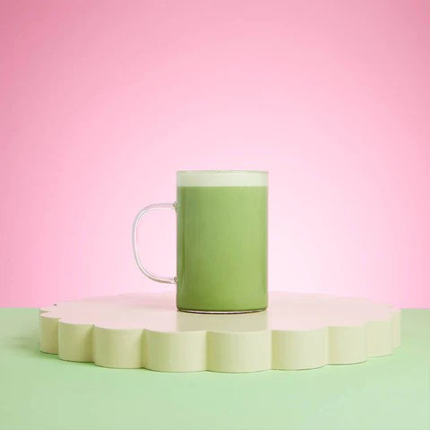

Back to Recipe Homepage!
Hot Matcha Latte

A hot milky matcha latte is a perfect treat for a morning pick me up on cold days,
or to provide some fuel for late night study sessions. A creamy, green delight that is sure to get you
fired up and ready to tick some things of your to-do list!
Ingredients
You Will Need:
- One Half Teaspoon of Ceremonial Grade Matcha
- Cold Water
- Hot or Boiling Water - 80c is preferred
- 250ml of Your Milk or Milk Alternative
- OPTIONAL: Vanilla Syrup to Taste
Step-by-Step
- Place your half teaspoon of matcha in a bowl with high sides (a cereal bowl will do).
- Add a splash, approximately 25ml of your COLD water to the bowl. Whisk over this so that your matcha is covered in water.
- Add approximately 75ml of your HOT OR BOILING water to the bowl. Whisk this thoroughly in an 'M' motion, preferably with a chasen (traditional matcha bamboo whisk)
- Now it is time to whisk in your 10ml of vanilla syrup for taste if you prefer vanilla matcha.
- Pour your matcha into a milk jug and top off with your milk or milk alternative!
- Steam to approximately 70 degrees celsius and make nice and foamy!
- Pour into your mug and appreciate your hard work.
- Alternatively: if you do not have a milk steamer, after Step 4 straight into a mug and microwave in 10 second intervals until you reach the desired temperature!
- Enjoy!